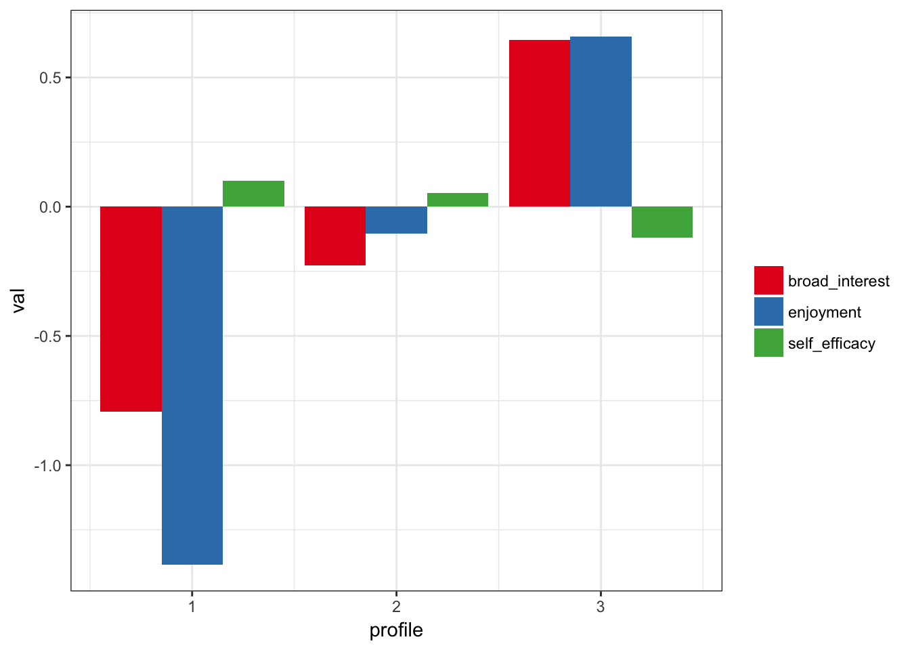

The goal of tidyLPA is to provide tools to make it easier to use the R package MCLUST for Latent Profile Analysis analyses.
Here is a brief example using the built-in pisaUSA15 dataset and variables for broad interest, enjoyment, and self-efficacy. See ?create_profiles_lpa for more details.
Also, please view the Introduction to tidyLPA vignette for more information.
library(tidyLPA)library(dplyr, warn.conflicts = FALSE)
d <- pisaUSA15[1:100, ]
m3 <- create_profiles_lpa(d, broad_interest, enjoyment, self_efficacy, n_profiles = 3, model = 2)
#> Fit varying means, equal variances and covariances (Model 2) model with 3 profiles.
#> AIC is 593.384
#> BIC is 636.62
#> ICL is 681.845
#> Entropy is 0.79779
plot_profiles_lpa(m3)